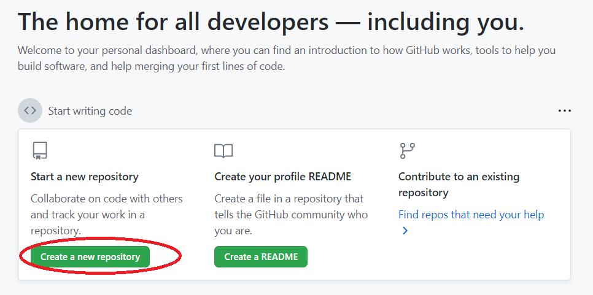
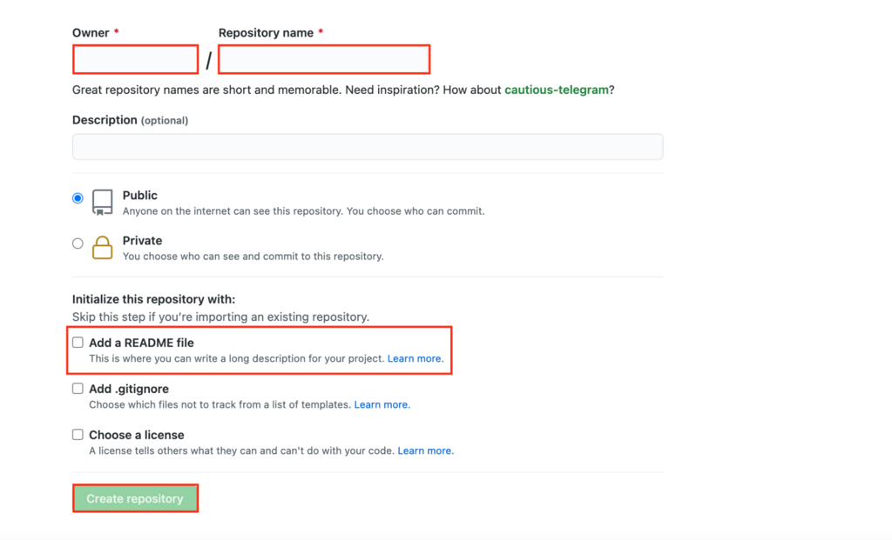
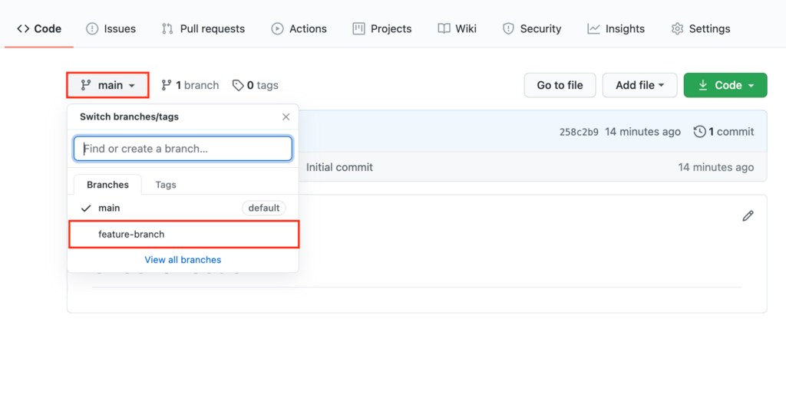

In our first day the instructor introduce us to Github and Atom Apps. We needed this two apps to make our website in an easy way.
How it works. First, we install the github and atom in our computer, then we creat our accout in github. In this time GitHub is a cloud-based project management and organization platform that incorporates Git’s version control features. Meaning, all GitHub users can track and manage changes being made to the source code in real-time while having access to all of the other Git functions available to them at the same place. . . . Click Create a repository to start a new project.

Second, the Owner section will already have your account name. Create a Repository Name. Check if it’s set to Public to make it open-source, and then check the Add a README file box. Finally, click Create repository.

Last, Commits are what saved changes on GitHub are called. Every time you’ll change the feature branch’s file, you’ll have to Commit it to keep it.
Here’s how to make and commit a change:
Access the feature branch by clicking main and selecting your newly created branch from the dropdown menu.
created with
Website Builder Software .